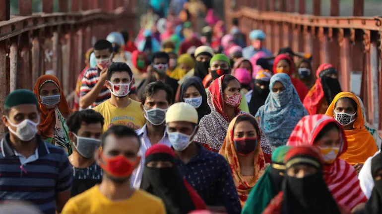

তৃতীয় ঢেউয়ের আশঙ্কা
তৃতীয় ঢেউয়ের আশঙ্কা সত্যি করে ভারতে চড়চড় করে বাড়তে শুরু করেছে কোভিড-১৯ সংক্রমণ। কেন্দ্রীয় স্বাস্থ্য মন্ত্রণালয়ের হিসাব অনুযায়ী, গত ২৪ ঘণ্টায় ভারতে নতুন করে সংক্রমিত হয়েছেন ৪৬ হাজার ১৬৪ জন। তাঁদের মধ্যে ৩১ হাজার ৪৪৫ জন সংক্রমিত হয়েছেন শুধু দক্ষিণী রাজ্য কেরালায়। কেরালায় হঠাৎ এত রোগীর প্রধান কারণ, রাজ্যের সেরা বার্ষিক উৎসব ‘ওনাম’; যা এ বছর ১২ আগস্ট শুরু হয়ে ২৩ আগস্ট শেষ হয়েছে। সরকারের আশঙ্কা, ফসল কাটার মৌসুম ঘিরে চলা এ উৎসব উদ্যাপনের কারণে রাজ্যটিতে আগামী কয়েক সপ্তাহে সংক্রমণের সংখ্যা আরও বাড়বে। নতুন করে যেসব রাজ্যে কোভিডের তৃতীয় তরঙ্গ শুরু হয়ে গেছে, সেগুলোর মধ্যে রয়েছে মহারাষ্ট্র। সেখানে গত ২৪ ঘণ্টায় আক্রান্ত হয়েছেন ৫ হাজার ৩১ জন। কেরালা ছাড়া বাকি তিন দক্ষিণী রাজ্য অন্ধ্র প্রদেশ, তামিলনাড়ু ও কর্ণাটকে দৈনিক সংক্রমিত ব্যক্তির সংখ্যা দুই হাজারের মধ্যে। যেসব রাজ্যে দৈনিক সংক্রমিত ব্যক্তির সংখ্যা এক হাজারের কম, সেগুলোর মধ্যে ওডিশা, মিজোরাম, পশ্চিমবঙ্গ ও আসাম রয়েছে। কেন্দ্রীয় স্বাস্থ্য মন্ত্রণালয়ের আশঙ্কা, এখন থেকে সতর্ক না হলে পশ্চিমবঙ্গে সংক্রমণ মাত্রাছাড়া হয়ে যেতে পারে। কারণ, আসন্ন দুর্গোৎসব। নতুন করে এই আক্রান্তের পাশাপাশি বেড়ে চলেছে মৃত্যুহারও। ২৪ ঘণ্টায় দেশে মারা গেছেন ৬০৭ জন। পশ্চিমবঙ্গের বিশিষ্ট তবলাশিল্পী শুভঙ্কর বন্দ্যোপাধ্যায় গত বুধবার করোনায় আক্রান্ত হয়ে মারা যান। ৫৫ বছরের এই শিল্পী দুটি টিকা নেওয়ার পরও আক্রান্ত হলেন এবং বাঁচলেন না। এ ঘটনা সরকারকে চিন্তায় ফেলেছে। টিকা গ্রহণের পরও কত মানুষ সংক্রমিত হচ্ছেন, কতজন মারা যাচ্ছেন, সে হিসাব রাখতে রাজ্য সরকারকে নির্দেশ দিয়েছে কেন্দ্র। দুর্গোৎসব উপলক্ষে পশ্চিমবঙ্গে সব ধরনের কাজের তৎপরতা বেড়ে যায়। দুর্গাপূজা ছাড়াও অক্টোবরে রয়েছে উত্তর ভারতের শ্রেষ্ঠ উদ্যাপন দশেরা ও দীপাবলি। তৃতীয় তরঙ্গের মুখে উৎসবের মৌসুম কীভাবে ভালোয়-ভালোয় কাটে, এখন থেকেই সেই চিন্তা শুরু হয়েছে। বিশেষজ্ঞদের ধারণা ছিল, কোভিডের তৃতীয় ঢেউ দ্বিতীয়ের মতো সম্ভবত ততটা মারাত্মক হবে না। কিন্তু কেরালার নতুন সংক্রমণ সেই ধারণাকে নস্যাৎ করছে। ২৪ ঘণ্টায় এ রাজ্যে সংক্রমণ বেড়েছে ৩০ শতাংশ। মারা গেছেন ২১৫ জন। এ পরিস্থিতি মোকাবিলায় সরকারের হাতে রয়েছে দুটিমাত্র উপায়। ব্যাপক হারে টিকাকরণ ও কড়াভাবে করোনা স্বাস্থ্যবিধি অনুসরণ। দেশে টিকা দেওয়ার হার অবশ্যই বেড়েছে। স্বাস্থ্য মন্ত্রণালয়ের হিসাবে ৬০ কোটি মানুষ অন্তত এক ডোজ টিকা পেয়েছেন। এ হারে টিকাকরণ চললে বছর শেষে ৩২ শতাংশ নাগরিককে টিকা দেওয়া সম্ভব হবে। কিন্তু সেই নাগরিকদের সবাই প্রাপ্তবয়স্ক হতে হবে। বিশেষজ্ঞদের ধারণা, তৃতীয় তরঙ্গ বেশি আক্রমণ করবে অপ্রাপ্তবয়স্কদের। ১২ থেকে ১৮ বছর বয়সীদের টিকা দেওয়া শুরু হবে অক্টোবরে। তার চেয়ে কম বয়সীরা টিকা পাওয়া শুরু করবে সামনের বছরের মার্চে। ফলে সরকার কিছুতেই দুশ্চিন্তামুক্ত হতে পারছে না।